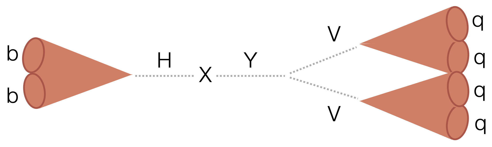
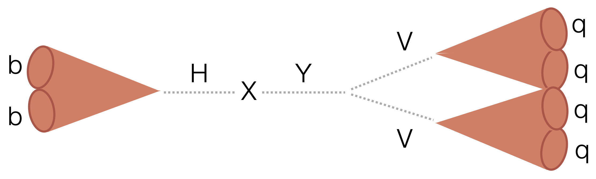

Chapter 14
High energy
searches in the all-hadronic bbVV channel
 

14.1 Introduction
14.2 Overview of analysis strategy
14.3 Event Selection
14.4 Background estimation
14.5 Systematic uncertainties
14.6 Results
14.7 Summary and Outlook
14.2 Overview of analysis strategy
14.3 Event Selection
14.4 Background estimation
14.5 Systematic uncertainties
14.6 Results
14.7 Summary and Outlook